2 (a) ---> What is E-Commerce? Explain scope of E-commerce in detail.
Ans: what is Ecommerce?
Explain scope of E-commerce in detail
2 (b) Explain the Obstacles in adopting E-Commerce and Impact of E-commerce in detail.
Ans: Obstacles in adopting E-commerce?
---->
1) Costs: Setting up an online store can be expensive. It involves expenses like website development, marketing, and technology. Small businesses might struggle to afford these upfront costs.
2) lack of computer knowledge: Some businesses might not be familiar with how to use computers or the internet to sell things. Learning these skills can take time and effort.
3) Shipping and Logistics: Delivering products to customers after they're ordered online can be complex and costly. Figuring out the best shipping methods and managing inventory can pose challenges.
4) Security Concerns:
E-commerce transactions involve sharing sensitive information like credit card details. Ensuring the security of online transactions and protecting customer data is essential but can be difficult.
5) Competition:
The online marketplace is crowded with many businesses competing for customers' attention. Standing out from competitors and attracting customers can be tough.
6) Cultural Adaptation:
Selling to customers in different countries requires understanding their languages, customs, and preferences. Adapting to different cultural contexts can be tricky for businesses expanding globally.
Impact of E-commerce
-------->
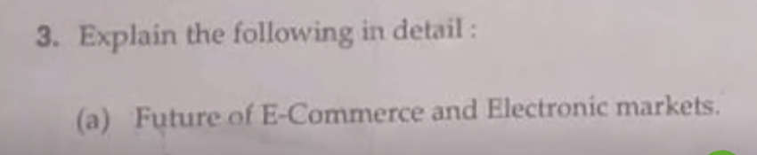
Ans: isko kr theory se
1) Special Shopping for You: Websites will get better at suggesting things you might like based on what you've looked at before. They'll use clever computer programs to figure out what you might want to buy next.
2) Shopping with Friends on Social Media: You'll be able to buy things directly from your favorite social media apps. It'll be like chatting with friends and finding cool stuff to buy at the same time.
3) Trying Before You Buy: You'll be able to see what things will look like in real life before you buy them. Cool technology will let you see furniture in your living room or clothes on your body without actually having them there.
4) Talking to Buy:
You'll be able to buy things just by talking to your smart speaker. You can tell it what you want, and it'll order it for you.
5) Eco-Friendly Shopping:
Websites will start to care more about the planet. They'll use less packaging and make sure the things they sell are made in a way that's good for the environment.
6) Buying from Other Countries: y
You'll have more chances to buy things from other countries. But sometimes it might be a bit tricky because of different rules and how far things have to travel.
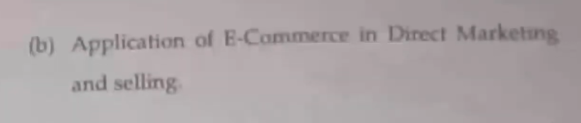
Ans: Application of e-commerce in direct marketing
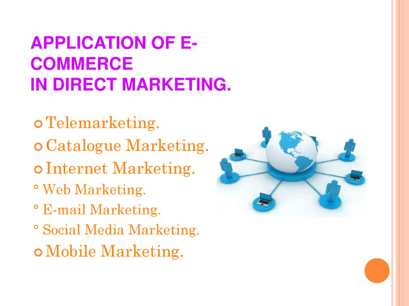
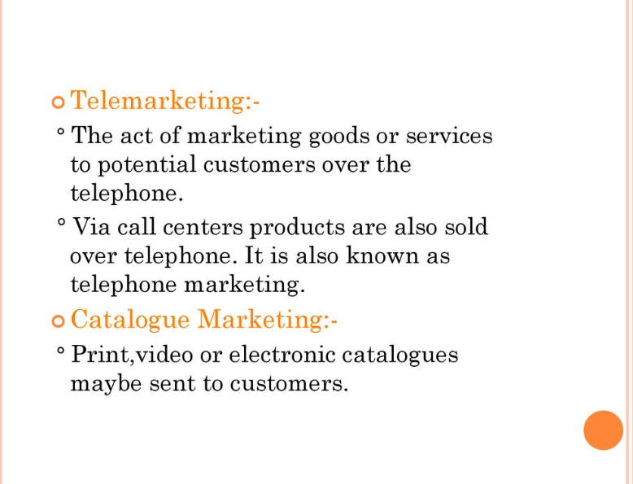
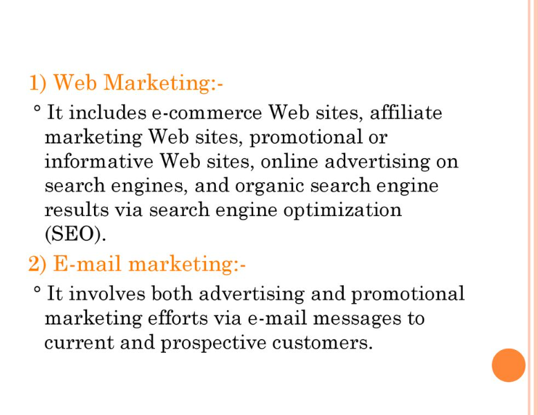
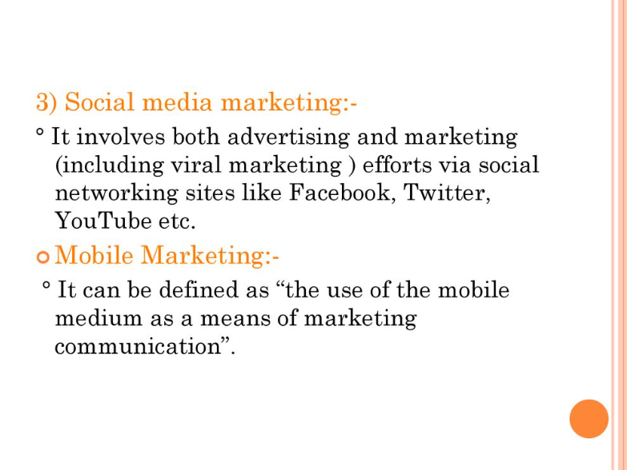
Application of E-commerce in selling
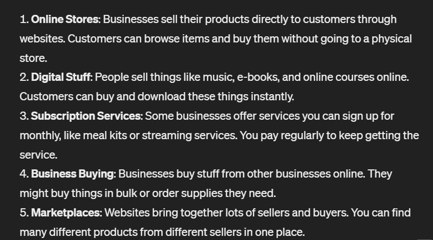
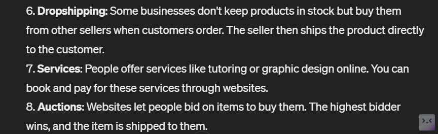
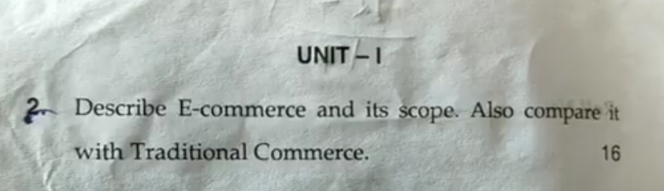
ecommerce and scope toh uper ho hi gaya hai niche comparision hai e commerce and traditional commerce ka
 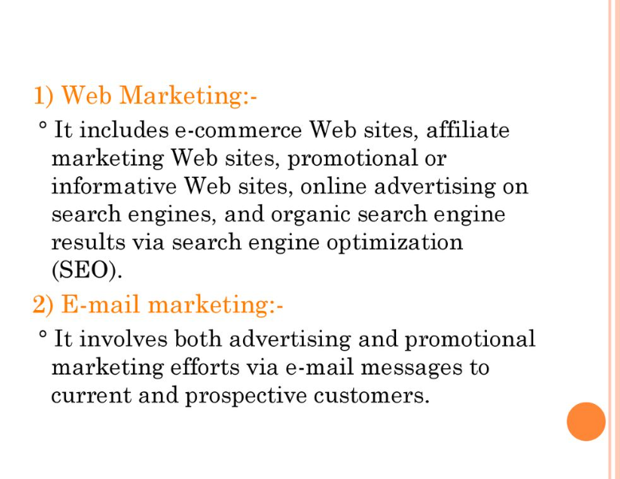
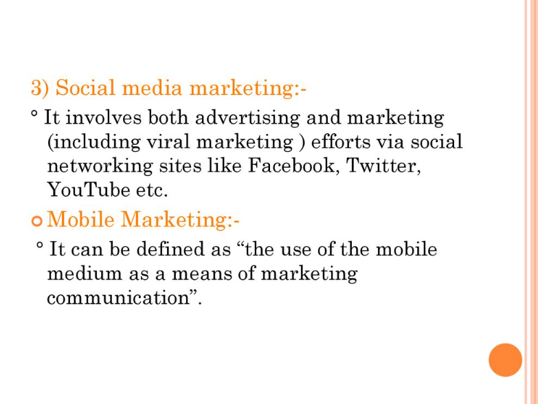
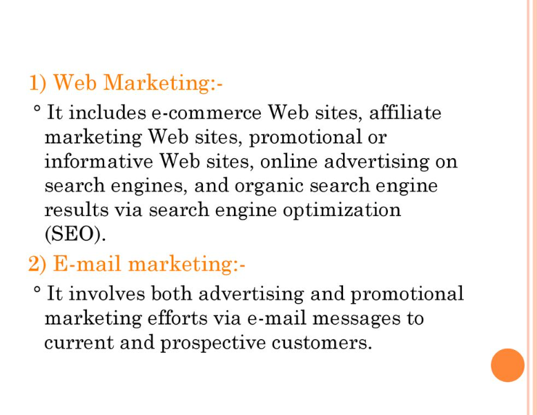
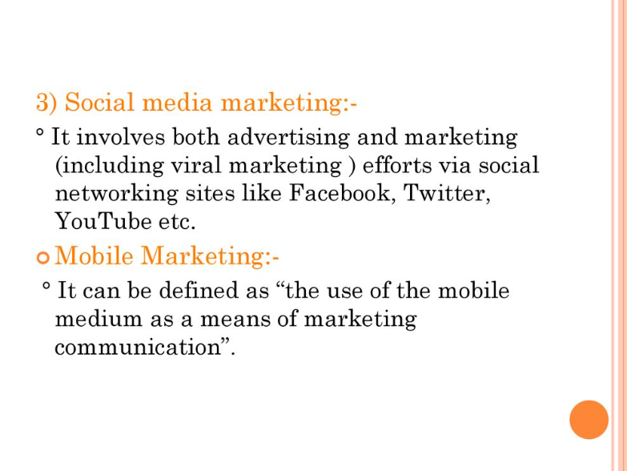